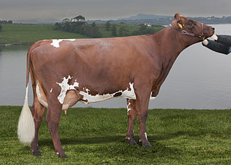

NORWEGIAN
Weight:
1100 to 1540 pounds
Height :
51 to 59 inches
Length:
6 to 7 feet
Color:
red and white in coloration.
Longevity:
10 – 15 years.
Norwegian personality
Docile and Gentle: Pinzgauer cattle are known for their calm and gentle temperament. They are typically easy to handle and work with, making them suitable for small-scale farming operations and agricultural work.
Curious and Inquisitive: Like many cattle breeds, Pinzgauer cows tend to exhibit curiosity about their surroundings. They may investigate new objects or environments with interest, displaying a natural curiosity about their surroundings..
What to expect
1.Physical Characteristics: Pinzgauer cattle are medium to large-sized animals with a distinctive appearance characterized by their red and white markings. They have a strong, muscular build, suitable for both meat and milk production. The breed is known for its strong legs and feet, which contribute to its ability to navigate rugged terrain.
2.Productivity: Pinzgauer cattle are considered a dual-purpose breed, meaning they are used for both milk and beef production. They typically have moderate milk production, producing milk with good butterfat content, suitable for cheese making. As beef cattle, Pinzgauers produce high-quality meat with excellent marbling, contributing to its tenderness and flavor.
3.Temperament: Pinzgauer cattle are known for their docile temperament, making them easy to handle and work with, especially in smaller farming operations. They are generally calm and gentle animals, which can be beneficial for farmers seeking low-stress handling practices.
4.Adaptability: Pinzgauer cattle have a reputation for being adaptable to various environmental conditions, including mountainous regions with rugged terrain and harsh climates. They can thrive in different management systems, including pasture-based grazing systems and more intensive farming operations.
5.Maternal Instincts: Pinzgauer cows typically exhibit strong maternal instincts, displaying attentiveness to their calves and providing good care for them. They are protective of their offspring and may demonstrate defensive behavior when they perceive a threat to their calves.
History of the Norwegian
Origins: The Pinzgauer breed is one of the oldest and most traditional breeds of cattle in Austria. It developed in the alpine region of Pinzgau, which is known for its rugged terrain and harsh climate. The exact origins of the breed are not well-documented, but it is believed to have descended from indigenous cattle that have been in the region for centuries.
Development: The Pinzgauer breed was developed over many generations through selective breeding for traits suited to the alpine environment. These traits include hardiness, adaptability to rough terrain, good foraging ability, and resistance to harsh weather conditions
Dual-Purpose: Historically, Pinzgauer cattle were valued for their versatility as both dairy and beef animals. They were used for milk production, providing dairy products for local consumption, as well as for meat production. Their ability to thrive in mountainous regions made them particularly well-suited for small-scale farming in alpine communities.
Appearance: Pinzgauer cattle are known for their distinctive appearance, characterized by a red-and-white or black-and-white coat pattern with a broad, white back and a red or black body. They have medium to large frames with strong, muscular builds, well-suited for both milk and beef production.